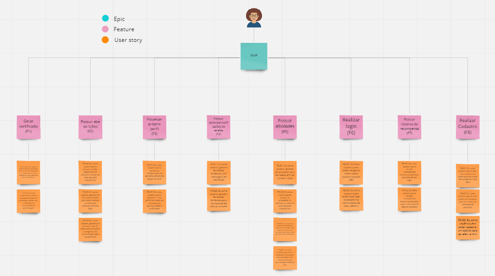
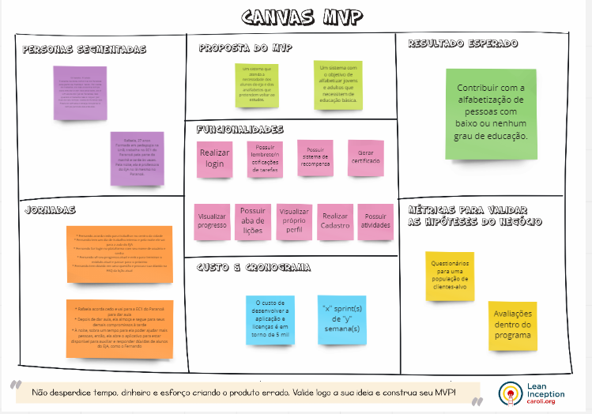

Time de Requisitos
Lista de requisitos
Funcionais
- RF1: O usuário deve poder fazer seu cadastro na plataforma
- RF2: O usuário deve poder fazer login na plataforma com os dados fornecidos na fase de cadastro
- RF3: O usuário deve poder realizar as lições e as atividades dentro de cada lição
- RF4: O usuário deve poder ver o progresso alcançado no completar das lições
- RF5: O usuário deve poder ver as informações de seu perfil (seu cadastro)
- RF6: O usuário deve poder ser recompensado por ações feitas dentro do aplicativo
- RF7: O usuário deve poder receber/visualizar um certificado por lições concluídas
- RF8: O usuário deve poder receber notificações em seu celular sobre o aplicativo
Não Funcionais
- RNF1: O frontend do aplicativo deve ser desenvolvido em Flutter e o Backend em Python Django
- RNF2: O aplicativo deverá ser desenvolvido utilizando as metodologias ágeis Scrum com XP em sprints de 1 semana
- RNF3: O aplicativo deverá ser desenvolvido para Android de versão 8.0>
- RNF4: O aplicativo precisa ser limitado à no máximo 100Mb de tamanho
- RNF5: O aplicativo deve conter uma forma de redirecionamento para um canal de ajuda.
Kanbam Framework SAFe

Canvas MVP

Time de Métodos de Desenvolvimento de Software
Título: Como o git vai salvar a sua vida
Tema: Fundamentos do GIT
Integrantes que conduziram a ativdade:
- Caio Berg Carlos Leite | 200015753 |
- Emerson Luis Teles Dos Santos | 200017322 |
- Lucas de Padua Bergamaschi | 200049429 |
- Mateus De Almeida Dias | 190142260 |
- Pedro Lucas Figueiredo Santana | 202017049 |
Conteúdo:
Introdução:
O Git é um projeto de código aberto maduro e com manutenção ativa desenvolvido em 2005 por Linus Torvalds, o famoso criador do kernel do sistema operacional Linux. Um número impressionante de projetos de software depende do Git para controle de versão, incluindo projetos comerciais e de código-fonte aberto.
Por que o GIt é o melhor para o desempenho?
As características brutas de desempenho do Git são muito fortes quando comparadas a muitas alternativas. Fazer o commit de novas alterações, branches, mesclagem e comparação de versões anteriores – tudo é otimizado para desempenho. Os algoritmos implementados no Git aproveitam o conhecimento profundo sobre atributos comuns de árvores de arquivos de código-fonte reais, como costumam ser modificados ao longo do tempo e quais são os padrões de acesso.
O Git é seguro?
O Git foi projetado com a integridade do código-fonte gerenciado como uma prioridade. O conteúdo dos arquivos, bem como os verdadeiros relacionamentos entre arquivos e diretórios, versões, tags e commits, todos esses objetos no repositório do Git são protegidos com um algoritmo de hash de criptografia seguro chamado SHA1. Isso protege o código e o histórico de alterações contra alterações acidentais e maliciosas e garante que o histórico tenha rastreabilidade total.
Git & Github - Qual a diferença entre eles?
O Github é o serviço de Web compartilhado para projetos que utilizam o Git para versionamento, ou seja, o GitHub é apenas um local na nuvem que irá armazenar os projetos versionados pelo Git
GIT
Estados
- Modificado (modified);
- Preparado (staged/index)
- Consolidado (comitted);
Ajuda
Geral
git help
Comando específico
git help add
git help commit
git help <qualquer_comando_git>
Configuração
Geral
As configurações do GIT são armazenadas no arquivo .gitconfig localizado dentro do diretório do usuário do Sistema Operacional (Ex.: Windows: C:\Users\Documents and Settings\Leonardo ou *nix /home/leonardo).
As configurações realizadas através dos comandos abaixo serão incluídas no arquivo citado acima.
Setar usuário
git config --global user.name "Leonardo Comelli"
Setar email
git config --global user.email leonardo@software-ltda.com.br
Setar editor
git config --global core.editor vim
Setar ferramenta de merge
git config --global merge.tool vimdiff
Setar arquivos a serem ignorados
git config --global core.excludesfile ~/.gitignore
Listar configurações
git config --list
Ignorar Arquivos
Os nomes de arquivos/diretórios ou extensões de arquivos listados no arquivo .gitignore não serão adicionados em um repositório. Existem dois arquivos .gitignore, são eles:
-
Geral: Normalmente armazenado no diretório do usuário do Sistema Operacional. O arquivo que possui a lista dos arquivos/diretórios a serem ignorados por todos os repositórios deverá ser declarado conforme citado acima. O arquivo não precisa ter o nome de .gitignore.
-
Por repositório: Deve ser armazenado no diretório do repositório e deve conter a lista dos arquivos/diretórios que devem ser ignorados apenas para o repositório específico.
Repositório Local
Criar novo repositório
git init
Verificar estado dos arquivos/diretórios
git status
Adicionar arquivo/diretório (staged area)
Adicionar um arquivo em específico
git add meu_arquivo.txt
Adicionar um diretório em específico
git add meu_diretorio
Adicionar todos os arquivos/diretórios
git add .
Adicionar um arquivo que esta listado no .gitignore (geral ou do repositório)
git add -f arquivo_no_gitignore.txt
Comitar arquivo/diretório
Comitar um arquivo
git commit meu_arquivo.txt
Comitar vários arquivos
git commit meu_arquivo.txt meu_outro_arquivo.txt
Comitar informando mensagem
git commit meuarquivo.txt -m "minha mensagem de commit"
Remover arquivo/diretório
Remover arquivo
git rm meu_arquivo.txt
Remover diretório
git rm -r diretorio
Visualizar histórico
Exibir histórico
git log
Exibir histórico com diff das duas últimas alterações
git log -p -2
Exibir resumo do histórico (hash completa, autor, data, comentário e qtde de alterações (+/-))
git log --stat
Exibir informações resumidas em uma linha (hash completa e comentário)
git log --pretty=oneline
Exibir histórico com formatação específica (hash abreviada, autor, data e comentário)
git log --pretty=format:"%h - %an, %ar : %s"
- %h: Abreviação do hash;
- %an: Nome do autor;
- %ar: Data;
- %s: Comentário.
Verifique as demais opções de formatação no Git Book
Exibir histório de um arquivo específico
git log -- <caminho_do_arquivo>
Exibir histórico de um arquivo específico que contêm uma determinada palavra
git log --summary -S<palavra> [<caminho_do_arquivo>]
Exibir histórico modificação de um arquivo
git log --diff-filter=M -- <caminho_do_arquivo>
- O
pode ser substituido por: Adicionado (A), Copiado (C), Apagado (D), Modificado (M), Renomeado (R), entre outros.
Exibir histório de um determinado autor
git log --author=usuario
Exibir revisão e autor da última modificação de uma bloco de linhas
git blame -L 12,22 meu_arquivo.txt
Desfazendo operações
Desfazendo alteração local (working directory)
Este comando deve ser utilizando enquanto o arquivo não foi adicionado na staged area.
git checkout -- meu_arquivo.txt
Desfazendo alteração local (staging area)
Este comando deve ser utilizando quando o arquivo já foi adicionado na staged area.
git reset HEAD meu_arquivo.txt
Se o resultado abaixo for exibido, o comando reset não alterou o diretório de trabalho.
Unstaged changes after reset:
M meu_arquivo.txt
A alteração do diretório pode ser realizada através do comando abaixo: git checkout meu_arquivo.txt
Repositório Remoto
Exibir os repositórios remotos
git remote
git remote -v
Vincular repositório local com um repositório remoto
git remote add origin git@github.com:leocomelli/curso-git.git
Exibir informações dos repositórios remotos
git remote show origin
Renomear um repositório remoto
git remote rename origin curso-git
Desvincular um repositório remoto
git remote rm curso-git
Enviar arquivos/diretórios para o repositório remoto
O primeiro push de um repositório deve conter o nome do repositório remoto e o branch.
git push -u origin master
Os demais pushes não precisam dessa informação
git push
Atualizar repositório local de acordo com o repositório remoto
Atualizar os arquivos no branch atual
git pull
Buscar as alterações, mas não aplica-las no branch atual
git fetch
Clonar um repositório remoto já existente
git clone git@github.com:leocomelli/curso-git.git
Tags
Criando uma tag leve
git tag vs-1.1
Criando uma tag anotada
git tag -a vs-1.1 -m "Minha versão 1.1"
Criando uma tag assinada
Para criar uma tag assinada é necessário uma chave privada (GNU Privacy Guard - GPG).
git tag -s vs-1.1 -m "Minha tag assinada 1.1"
Criando tag a partir de um commit (hash)
git tag -a vs-1.2 9fceb02
Criando tags no repositório remoto
git push origin vs-1.2
Criando todas as tags locais no repositório remoto
git push origin --tags
Branches
O master é o branch principal do GIT.
O HEAD é um ponteiro especial que indica qual é o branch atual. Por padrão, o HEAD aponta para o branch principal, o master.
Criando um novo branch
git branch bug-123
Trocando para um branch existente
git checkout bug-123
Neste caso, o ponteiro principal HEAD esta apontando para o branch chamado bug-123.
Criar um novo branch e trocar
git checkout -b bug-456
Voltar para o branch principal (master)
git checkout master
Resolver merge entre os branches
git merge bug-123
Para realizar o merge, é necessário estar no branch que deverá receber as alterações. O merge pode automático ou manual. O merge automático será feito em arquivos textos que não sofreram alterações nas mesmas linhas, já o merge manual será feito em arquivos textos que sofreram alterações nas mesmas linhas.
A mensagem indicando um merge manual será:
Automerging meu_arquivo.txt
CONFLICT (content): Merge conflict in meu_arquivo.txt
Automatic merge failed; fix conflicts and then commit the result.
Apagando um branch
git branch -d bug-123
Listar branches
Listar branches
git branch
Listar branches com informações dos últimos commits
git branch -v
Listar branches que já foram fundidos (merged) com o master
git branch --merged
Listar branches que não foram fundidos (merged) com o master
git branch --no-merged
Criando branches no repositório remoto
Criando um branch remoto com o mesmo nome
git push origin bug-123
Criando um branch remoto com nome diferente
git push origin bug-123:new-branch
Baixar um branch remoto para edição
git checkout -b bug-123 origin/bug-123
Apagar branch remoto
git push origin:bug-123
Rebasing
Fazendo o rebase entre um o branch bug-123 e o master.
git checkout experiment
git rebase master
Mais informações e explicações sobre o Rebasing
Stash
Para alternar entre um branch e outro é necessário fazer o commit das alterações atuais para depois trocar para um outro branch. Se existir a necessidade de realizar a troca sem fazer o commit é possível criar um stash. O Stash como se fosse um branch temporário que contem apenas as alterações ainda não commitadas.
Criar um stash
git stash
Listar stashes
git stash list
Voltar para o último stash
git stash apply
Voltar para um stash específico
git stash apply stash@{2}
Onde 2 é o indíce do stash desejado.
Criar um branch a partir de um stash
git stash branch meu_branch
Reescrevendo o histórico
Alterando mensagens de commit
git commit --amend -m "Minha nova mensagem"
Alterar últimos commits
Alterando os três últimos commits
git rebase -i HEAD~3
O editor de texto será aberto com as linhas representando os três últimos commits.
pick f7f3f6d changed my name a bit
pick 310154e updated README formatting and added blame
pick a5f4a0d added catfile
Altere para edit os commits que deseja realizar alterações.
edit f7f3f6d changed my name a bit
pick 310154e updated README formatting and added blame
pick a5f4a0d added catfile
Feche o editor de texto.
Digite o comando para alterar a mensagem do commit que foi marcado como edit.
git commit –amend -m “Nova mensagem”
Aplique a alteração
git rebase --continue
Atenção: É possível alterar a ordem dos commits ou remover um commit apenas mudando as linhas ou removendo.
Juntando vários commits
Seguir os mesmos passos acima, porém marcar os commtis que devem ser juntados com *squash
Remover todo histórico de um arquivo
git filter-branch --tree-filter 'rm -f passwords.txt' HEAD
Exercício
Objetivo: Inicializar um repositorio, criar um branch main e outra develop, realizar um commit com alterações na branch develop e depois realizar um merge das alterações da branch develop dentro da main.
Tempo estimado de realização: 15min
Passo a passo:
$ git init
$ git commit -am "first commit"
$ git branch -m "master" "main"
$ git checkout -b "develop"
$ git add <files_changed>
$ git commit -m "first commit on develop branch"
$ git checkout main
$ git merge develop main
Referência bibliográfica:
- https://git-scm.com/
- https://gist.github.com/leocomelli/2545add34e4fec21ec16
Histórico de versionamento
| Data | Versão | Descrição | Autor |
|---|---|---|---|
| 20/07/2022 | 1.0.0 | Cria documento das apresentações de Unidade 2 e adiciona video de Requisitos | Cristian Furtado |
| 20/07/2022 | 1.0.1 | Adiciona dojo de git | Equipe de MDS |
| 21/07/2022 | 1.0.2 | Adiciona links dos requisitos e kanbam | Cristian Furtado |
| 03/07/2022 | 1.1 | Adiciona imagem ao invés dos links | Cristian Furtado |
| 11/08/2022 | 2.0 | Refatora o arquivo deixando apenas as entregas da Unidade 2 | Cristian Furtado |